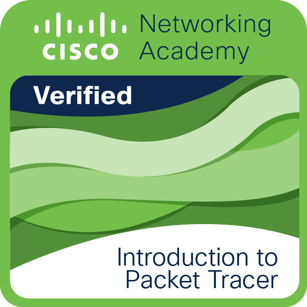

Ausgestellt von Oracle Mehr
Die Oracle Cloud Infrastructure (OCI) Foundations-Zertifizierung richtet sich an Personen, die grundlegende Kenntnisse der von Oracle Cloud Infrastructure bereitgestellten Public Cloud-Services nachweisen möchten.
Ausgestellt von Cisco Mehr
Vertraut mit der Verwendung von Cisco Packet Tracer zum Verbinden, Überwachen und Programmieren von Internet of Things-Geräten .

Ausgestellt von Cisco Mehr
Verfügen über verifizierte einführende Kenntnisse in IoT und wie es die digitale Transformation und neue Technologien ermöglicht.

Ausgestellt von Cisco Mehr
Vertraut mit der Welt der Cybersicherheit und mann versteht, wie Cybersicherheitsbedrohungen jeden betreffen.
Ausgestellt von Cisco Mehr
Ein Netzwerk mit Cisco Packet Tracer einrichten, verwalten und überwachen.

Ausgestellt von Cisco Mehr
Der Inhaber dieser Qualifikation verfügt über Kenntnisse und Fähigkeiten zur Erstellung digitaler Modelle von IP-Netzwerken und IoT-Systemen mit Cisco Packet Tracer.
Ausgestellt von Google Mehr
Absolvent:innen, die das Google IT Support-Zertifikat erhalten, haben fünf von Google entwickelte Kurse erfolgreich abgeschlossen. Diese Kursabschlüsse umfassen praktische, an realen Situationen orientierte Leistungsprüfungen und bereiten die Lernenden auf Einstiegspositionen im Bereich IT-Support vor. Die Absolvent:innen verfügen über grundlegende Kenntnisse und Fähigkeiten, z. B. in den Bereichen Fehlerbehebung und Kundendienst, Netzwerke, Betriebssysteme, Systemadministration und Sicherheit.
Ausgestellt von Cisco-NDG Mehr
-Basic installation and configuration of Linux software.
-Understand the basics of the Linux Command Line Interface (CLI).
-Interact with the Linux virtual machine.
-Determine if Linux is for you or not.
Ausgestellt von Cisco-NDG Mehr
- Acquire open source concepts and progressively master Linux commands.
-Understand how Linux is used and the basics of its command line.
-Become skilled at using the Linux virtual machine for experiments.
-Prepare for LPI Linux Essentials Professional Development Certificate (PDC).
Ausgestellt von Cisco Mehr
Hierarchical Design and Number systems :
Explain the requirements of a reliable network and the characteristics of a hierarchical network design.
Ausgestellt von Cisco Mehr
Network Communications Basics :
You understand how routing lets hosts communicate with hosts on other networks and how network devices can improve network communication.
Ausgestellt von Cisco Mehr
Network Access Basics :
You understand how protocols are foundational for network communication, how devices send and receive data, and types of network cabling.
Ausgestellt von Cisco Mehr
Basic Cisco Configuration :
You can configure Cisco devices using IOS command line, build a small network, and test simple connectivity issues with your network.
Ausgestellt von Cisco Mehr
Internet Protocol Basics:
You understand the basics of internet protocol (IP), IPv4 and IPv6, and how devices automatically receive IP addresses to communicate.
-Interact with the Linux virtual machine.
-Determine if Linux is for you or not.

Ausgestellt von Cisco Mehr
Networking Devices and Initial Configuration :
Cisco verifies the earner of this badge successfully completed the Networking Devices and Initial Configuration course and achieved this student level credential.
Earner learned characteristics and benefits of cloud and virtualization, explored how to provide Internet Protocol (IP) addresses to devices, calculate an IP addressing scheme, configured Cisco devices to create a small network and tested for connectivity issues.
Participated in up to 7 labs and 12 Cisco Packet Tracer activities.
Ausgestellt von Cisco Mehr
Understanding Network Access :
Explain how protocols at the data link and network layer enable end-to-end communications.
Ausgestellt von Cisco Mehr
Networking Protocols Basics :
You can use application layer services to do real-world tasks, compare transport layer protocols, and test and troubleshoot connectivity.
Ausgestellt von Cisco Mehr
Network Basics :
You are familiar with types of networks, how they work, key networking concepts, and have practiced building a home wireless network.
Ausgestellt von Cisco Mehr
Transport Services Basics :
Explain how DNS and DHCP enable devices to obtain an IP address automatically and ARP operation with Ethernet.

Ausgestellt von Cisco Mehr
Networking Basics :
Cisco verifies the earner of this badge successfully completed the Networking Basics course and achieved this student level credential. Earner has knowledge of the types of networks, how they work, how devices send and receive data, the types of network cabling, how IP addresses find information on the Internet, how transport and applications operate, and has practiced building a home wireless network. Participated in up to 13 Cisco Packet Tracer activities.

Ausgestellt von Cisco Mehr
Introduction to Cybersecurity :
You have verified introductory knowledge of cybersecurity, including the impact of threats and why cybersecurity is a growing profession.
Ausgestellt von Cisco Mehr
Network Defense :
You understand the types of security measures needed to protect networks – from infrastructure to devices to data.
Ausgestellt von Cisco Mehr
Resource Specialist :
You are familiar with legal and ethical issues in cybersecurity and recognize opportunities in the career pathways, credentials and work roles.
Ausgestellt von Cisco Mehr
System Safeguards :
You understand how to protect data and information systems using authentication, encryption and backup.